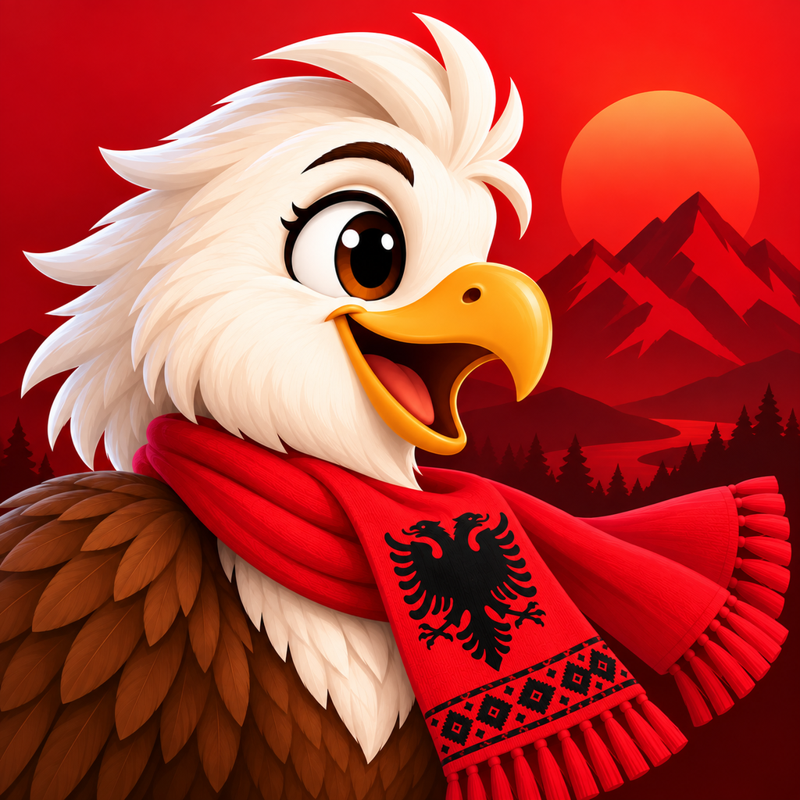
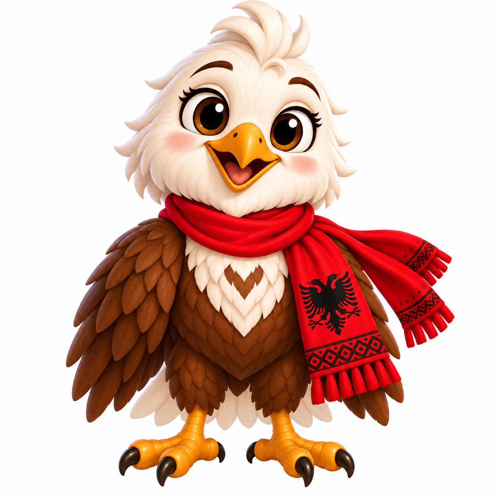
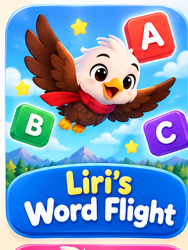
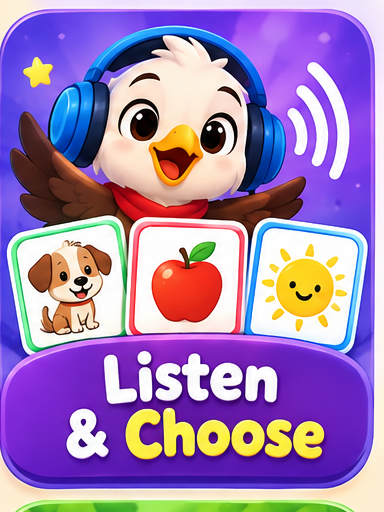
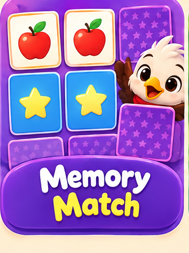
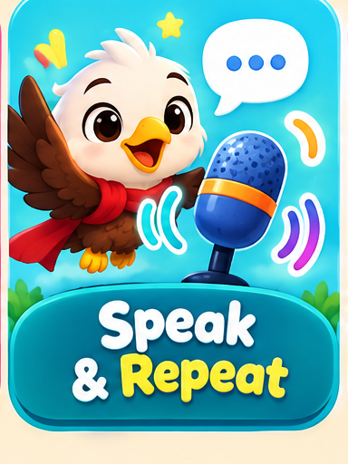

01 / ALBUP
One word at a time.
Explore 30 lessons covering greetings, numbers, colors, family, food, and expressions for everyday life.

AlbUp.A little curiosity. A whole new language.
Meet Liri, your friendly little eagle on a colorful journey through Albanian. A new word, a little practice, and something to smile about.

Përshëndetje! Hello!Your adventure starts here
Whether you’re just beginning or reconnecting with your family’s language, AlbUp gives you room to learn and try.
Explore 30 lessons covering greetings, numbers, colors, family, food, and expressions for everyday life.
Hear Albanian words and phrases. Practice pronunciation and listen to your own voice in supported activities.
Explore vocabulary in the dictionary, enjoy illustrated stories, and learn animal names through Watch & Play videos.
A playful way to practice
Fly with Liri, listen closely, find matching pairs, and practice speaking. Every game is another reason to explore Albanian.




A language that connects
Discover illustrated stories, words for everyday moments, and the Albanian Language Adventure Map. Celebrate your progress at your own pace.
Questions about lessons, games, or audio? Find answers and get in touch.